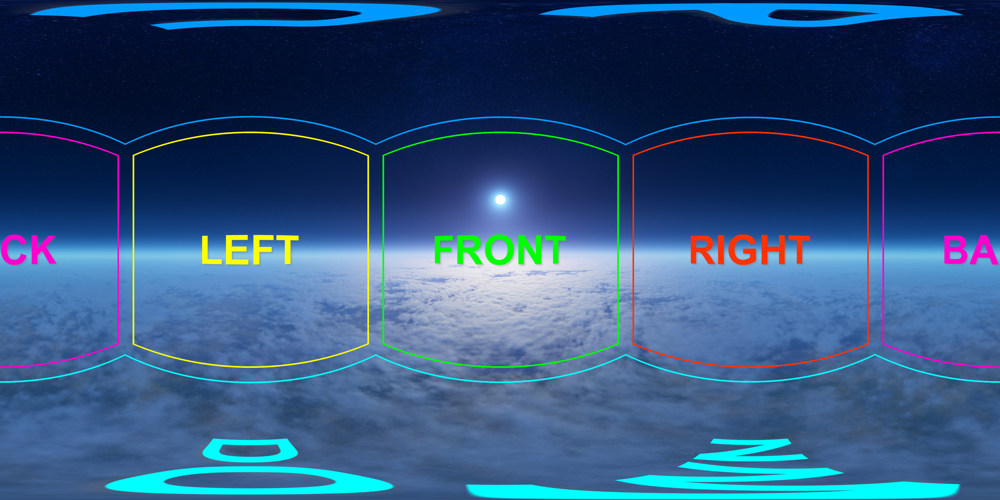

Javascript must be activated for this page!
krpano Coordinate Systems
Here a quick overview about the various coordinate systems in krpano.
View / Lookat Coordinate System
Ranges:
360x180 degree.
From -180 (left) to +180 (right).
From -90 (top/zenith) to +90 (bottom/nadir).
The coordinates can wrap around and be also outside the 360x180 range,
but the resulting view can be always only inside the 360x180 range.
0/0 is always the center of the image.
Usages:
The view (viewing camera) is using the
hlookat and
vlookat settings
to define the looking direction
to the given coordinate in the panoramic image.
Hotspots are using ath and
atv settings to the define the spherical
position in the panoramic image.
Actions and functions might typically use h and v or x and y
for addressing the spherical position.
3D Coordinate System
3D Coordinate System:
The 3D coordinate system is an extention of the 2D layer system (with a top-left edge) into 3D space.
This is done by adding +z as a depth into the screen value.
This way the layer and hotspot x, y coordinates are compatible with each other.
3D Axes:
X-Axis: Points from left (-) to right (+)
Y-Axis: Points from top (-) to bottom (+)
Z-Axis: Points from out-of-the-screen (-) into-the-screen (+)
The coordinate system is left-handed.
Unit: 1 ^= 1 cm
Panoramic Image Arrangement
Spherical, Cylindrical, Flat Panoramic Images:
0/0 is always the center of the image.
The images can have any horizontal and vertical field-of-view range.
Cube-face Arrangement:
The left cube face is at h=-90° v=0°
The front cube face is at h=0° v=0°
The right cube face is at h=+90° v=0°
The back cube face is at h=+180° v=0°
The up cube face is at h=0° v=-90°
The down cube face is at h=0° v=+90°
The same as Spherical / Equirectangular Image:
